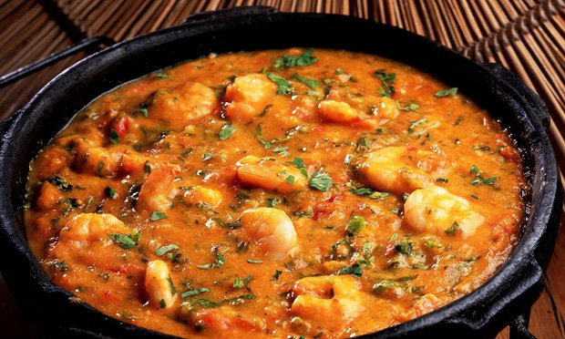

Bobó de Camarão

Descrição:
Um clássico da culinária brasileira preparado na sua cozinha: hoje você vai aprender como fazer bobó de camarão!
Essa receita é simples, tradicional e é ideal para um almoço inesquecível em família!
Ingredientes:
- 1 kg de camarão fresco;
- 3 dentes de alho picados e amassados;
- pimenta-do-reino;
- 3 cebolas (1 cortada em rodelas e 2 raladas);
- 6 colheres (sopa) de azeite de oliva;
- 1 maço de cheiro-verde picado;
- 2 pimentões verdes bem picadinhos;
- sal;
- suco de 1 limão;
- 1 kg de mandioca;
- 1 folha de louro;
- 2 vidros de leite de coco;
- 2 latas de molho pronto de tomate;
- 2 colheres (sopa) de azeite de dendê.
Passos:
- Lave os camarões e tempere com sal, alho, pimenta e limão, deixe marinar.
- Pegue uma panela com água e cozinhe a mandioca em pedacinhos, com louro e a cebola em rodelas.
- Quando estiver mole, acrescente um vidro de leite de coco.
- Deixe esfriar um pouco e bata no liquidificador.
- Esquente o azeite de oliva, junte a cebola ralada e deixe dourar.
- Acrescente os camarões e frite.
- Adicione as 2 latas de pomarola, o cheiro-verde, o pimentão e deixe cozinhar por alguns minutos.
- Junte na mesma panela, a mandioca batida no liquidificador, outro vidro de leite de coco e o azeite de
dendê.
- Deixe levantar fervura e está pronto.
Voltar ao menu principal